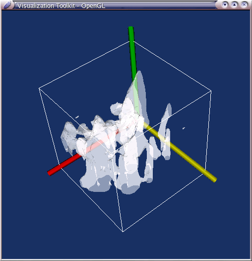
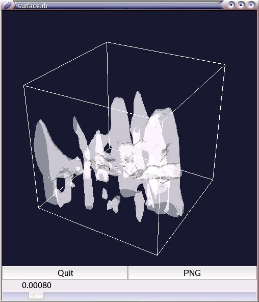
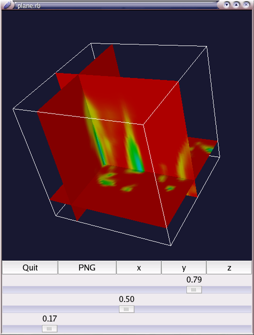

<!DOCTYPE HTML PUBLIC "-//W3C//DTD HTML 4.01//EN"> 
<HTML lang="ja">
<HEAD>
<META http-equiv="Content-Type" content="text/html; charset=iso2022-jp">
<META name="author" content="whitecat">
<LINK REL="CONTENTS" href="./index.html">
<link rel="stylesheet" href="dennou-ruby.css" type="text/css">
<TITLE>Ruby-VTK Tutorial</TITLE>
</HEAD>
<BODY>

<H1>Ruby-VTK Tutorial</H1>
<HR/>

<H2>VTK$B$N%$%s%9%H!<%k(B</H2>
<P>
$B$^$:$O(BVTK$B$r%$%s%9%H!<%k$7$^$9!#(B
</P>
<UL>
 <LI>CMake$B$r%$%s%9%H!<%k$9$k(B</LI>
      <P>
      <A HREF="http://www.cmake.org/HTML/Index.html">CMake$BK\2H(BHP</A>
      $B$N(B "Download" $B$N%Z!<%8$+$i%=!<%9$^$?$O%3%s%Q%$%k:Q%P%$%J%j$r(B
      $B%@%&%s%m!<%I$7$^$7$g$&(B<BR>
      $B%=!<%9$r%@%&%s%m!<%I$7$?J}$OE83+$7$F%3%s%Q%$%k!"%$%s%9%H!<%k$7$^$7$g(B
      $B$&(B
      </P>
 <LI>VTK$B$r%$%s%9%H!<%k$9$k(B</LI>
      <P>
      <A HREF="http://public.kitware.com/VTK/">VTK$BK\2H(BHP</A>
      $B$N(B "Get The Software" $B$N%Z!<%8$G(B
      "Download the official release (4.2)" $B$r%/%j%C%/$7!"(B
      <UL>
       <LI>VTK-4.2-LatestRelease.tar.gz</LI>
       <LI>VTKData-4.2.tar.gz</LI>
      </UL>
      $B$r%@%&%s%m!<%I$7$^$7$g$&!#(B<BR>
      </P>
      <P>
      $BN>J}E83+$7$?8e!"(BVTK$B%G%#%l%/%H%j$KF~$j$^$7$g$&!#(B
      $B0J2<$N%3%^%s%I$r<B9T$7$^$9!#(B
      </P>
<PRE CLASS="source">
%cmake .
</PRE>
      <P>
      $B%(%i!<$,L5$$$3$H$r3NG'$7!"0J2<$r<B9T$7$^$9!#(B
      </P>
<PRE CLASS="source">
%ccmake .
</PRE>
      <P>
      $BLp0u$N",(B/$B"-%\%?%s$G3F9`L\$K0\F0$7!"(BEnter $B$r2!$7$FJQ99$7$^$9!#(B
      <UL>
       <LI>BUILD_SHARED_LIBS</LI>
	    "ON" $B$KJQ99$7$^$9!#(B
       <LI>CMAKE_INSTALL_PREFIX</LI>
	    $B$*9%$_$N%Q%9$KJQ99$7$^$9!#(B
	    $B$?$$$F$$$O(B "/usr/local" $B$G$$$$$H;W$$$^$9!#(B
       <LI>VTK_DATA_ROOT</LI>
	    $B@h$[$I(B "VTKData-4.2.tar.gz" $B$rE83+$7$?@h$r;XDj$7$^$9!#(B<BR>
	    $BNc(B) "/home/hoge/src" $B$GE83+$7$F$$$l$P(B
	    "/home/hoge/src/VTKData-release-4-2" $B$G$9!#(B
       <LI>VTK_USE_HYBRID, VTK_USE_PATENTED, VTK_USE_RENDERING</LI>
	    "ON" $B$KJQ99$7$^$9!#(B
       <LI>VTK_USE_PARALLEL</LI>
	    CPU$B$,(B2$B$D0J>e$"$k4D6-$G$"$l$P(B "ON" $B$K$9$k$H$$$$$H;W$$$^$9!#(B
       <LI>VTK_WRAP_JAVA, VTK_WRAP_PYTHON, VTK_WRAP_TCL</LI>
	    $B$=$l$>$l;H$$$?$1$l$P(B "ON" $B$K$7$F$/$@$5$$!#(B<BR>
	    $B;H$o$J$/$F$b%5%s%W%k$r<B9T$9$k$3$H$,$G$-$k$N$G(B
	    Ruby$B$r=q$/:]$K$bLr$KN)$A$^$9!#(B
	    $B$=$l$>$l(B Java, Python, Tcl $B$,%$%s%9%H!<%k$5$l$F$$$kI,MW$,$"$j$^$9!#(B
      </UL>
      $B3F9`L\$rJQ99$7$?$i%-!<%\!<%I$N(B "c" $B$r2!$7$^$7$g$&!#(B
      $B2<$N%a%K%e!<$K(B "Press [g] to generate and exit" $B$N9`L\$,$"$kJ}$O(B
      "g" $B$r2!$7$^$7$g$&!#@_Dj40N;$G$9(B<BR>
      Java, Python, Tcl $B$r(B "ON" $B$K$7$?J}$O$*$=$i$/$$$/$D$+(B
      $BDI2C@_Dj$9$kI,MW$,$"$j$^$9!#(B
      "*"$B0u$,$D$$$F$$$k$H$3$m$r?7$?$K4D6-$K9g$o$;$F@_Dj$7$^$7$g$&!#(B
      "PYTHON_LIBRARY" $B$O(B "/usr/lib/python2.3/config/libpython2.3.a"
      $B$_$?$$$J$H$3$m$K$"$k$H;W$$$^$9!#(B
      $B@_Dj$G$-$?$i(B "c" $B$r2!$7$^$7$g$&!#(B
      $B2<$N%a%K%e!<$K(B "Press [g] to generate and exit"
      $B$N9`L\$,DI2C$5$l$?$H;W$$$^$9!#(B"g" $B$r2!$7$^$7$g$&!#(B
      </P>
      <P>
      $B$"$H$O%3%s%Q%$%k$7$^$9!#(B
      $B0J2<$r<B9T$7$F=*$o$k$^$G%3!<%R!<$G$b0{$s$GBT$A$^$7$g$&!#(B
      </P>
<PRE CLASS="source">
%make
</PRE>
      <P>
      $BL5;v=*$o$l$P$"$H$O%$%s%9%H!<%k$G$9!#(B
      $B$b$7%(%i!<$,=P$F%3%s%Q%$%k$K<:GT$7$??M$O(B
      $B%(%i!<%a%C%;!<%8$r8+$F4hD%$C$F=$@5$7$^$7$g$&!#(B
      </P>
<PRE CLASS="source">
%su -
#make install
</PRE>
      <P>
      $BL5;v%$%s%9%H!<%k40N;$G$9!#(B
</UL>
<P>
$B%5%s%W%k$rF0$+$7$FM7$S$^$7$g$&(B("Example" $B%G%#%l%/%H%j$K$"$j$^$9(B)$B!#(B
<UL>
 <LI>Cxx</LI>
      $B%5%s%W%k$rF0$+$9$K$O(B
<PRE CLASS="source">
%cmake .
%make
</PRE>
      $B$G<B9T%U%!%$%k$,$G$-$k$N$G!"$=$l$r<B9T$7$F$/$@$5$$!#(B
 <LI>Python</LI>
      $B0J2<$N$h$&$K<B9T$7$^$9!#(B
<PRE CLASS="source">
%vtkpython hoge.py
</PRE>
 <LI>Tcl</LI>
      $B0J2<$N$h$&$K<B9T$7$^$9!#(B
<PRE CLASS="source">
%vtk hoge.tcl
</PRE>
</UL>

<P>
VTK $B$K$D$$$F$O0J2<$,Lr$KN)$D$H;W$$$^$9!#(B
<UL>
 <LI><A HREF="http://public.kitware.com/VTK/doc/release/4.0/html/">
      VTK 4.0.2 Documentation</A></LI>
 <LI><A HREF="http://donguri.sakura.ne.jp/~shock8/3d/vtk_index.html">
      $B<\H,O:$N(B3D$B$G;O$a$k%W%m%0%i%_%s%0(B(Visualization ToolKit)</A></LI>
</UL>
</P>
      


<H2>Ruby-VTK$B$N%$%s%9%H!<%k(B</H2>
<P>
$B<!$K(BRuby-VTK$B$r%$%s%9%H!<%k$7$^$9!#(B
</P>
<P>
$B8=:_(B cygwin $B$K$O%$%s%9%H!<%k$G$-$^$;$s!#(B<BR>
VTK $B$,(B "g++" $B$N(B "-m win32" $B%*%W%7%g%sIU$G%3%s%Q%$%k$5$l$k$N$KBP$7!"(B
cygwin official $B$N(B ruby $B$,$*$=$i$/(B $B>e5-%*%W%7%g%s$J$7$G%3%s%Q%$%k$5$l$F(B
$B$$$k$3$H$,860x$H9M$($i$l$^$9!#(B
</P>
<P>
<A HREF="http://www.gfd-dennou.org/arch/ruby/products/ruby-vtk/index-j.html">
Ruby-VTK HP</A>
$B$+$i(B "ruby-vtk-{version}.tar.gz" $B$r%@%&%s%m!<%I$7$^$9!#(B<BR>
$BE83+8e!"(B "ruby-vtk-{version}" $B%G%#%l%/%H%j$KF~$j$^$9!#(B<BR>
$B0J2<$r<B9T$7$F$/$@$5$$!#(B
</P>
<PRE CLASS="source">
%ruby extconf.rb
%make
%su -
#make install
</PRE>
<P>
$B%(%i!<L5$/=*$o$l$PL5;v%$%s%9%H!<%k40N;$G$9!#(B<BR>
$B%(%i!<$,$G$?>l9g$O!"(B
$B$"$J$?$N4D6-(B(OS, C++$B%3%s%Q%$%i(B, ruby$B%P!<%8%g%s(B)$B$H(B
$B%(%i!<%a%C%;!<%8$r:n<T$KJs9p$7$F$/$@$5$$!#(B
</P>
<P>
$B%5%s%W%k$r;n$7$^$7$g$&!#(B
"sample" $B%G%#%l%/%H%j$K$$$/$D$+%5%s%W%k$,$"$j$^$9!#(B


<H2>Ruby-VTK$B$r$D$+$&(B</H2>

<H3>Ruby-VTK$B$N;H$$J}(B</H3>
<P>
$B$G$O<B:]$K(B Ruby-VTK $B$r;H$C$F$_$^$7$g$&!#(B
$B;HMQ$9$k$?$a$K$O(B
</P>
<PRE CLASS="source">
require "vtk"
</PRE>
<P>
$B$H$7$^$9!#(B
$B%m!<%I;~4V$,5$$K$J$kJ}$OI,MW$J%3%s%]!<%M%s%H$@$1%m!<%I$9$k$3$H$b$G$-$^$9(B
(vtk/Common, vtk/Filtering, vtk/Graphics, vtk/IO, vtk/Imaging,
vtk/Rendering, vtk/Patented, vtk/Parallel, vtk/Hybrid)$B!#(B
</P>
<P>
$B$H$j$"$($:(B VTK $B$N(B $B%P!<%8%g%s$G$bD4$Y$F$_$^$7$g$&(B
</P>
<PRE CLASS="source">
%irb -r vtk
irb(main):001:0> Vtk::VTK_VERSION
=> "4.2.6"
</PRE>
<P>
$B$"$J$?$,%$%s%9%H!<%k$7$?(B VTK $B$N%P!<%8%g%s$,I=<($5$l$?$O$:$G$9!#(B
</P>

<H3>$B%/%i%9$NL>A0(B</H3>
<P>
VTK $B$N%/%i%9$NL>A0$O(B "vtkObject" $B$N$h$&$K(B $B>.J8;z$N(B vtk $B$,@hF,$K$D$$$F$$$^$9!#(B
Ruby-VTK $B$G$O$9$Y$F$N%/%i%9$,(B Vtk$B%b%8%e!<%k$N2<$KDj5A$5$l$F$$$^$9!#(B
$B$=$l$>$l$N%/%i%9$O(B "Vtk::Object" $B$N$h$&$K(B
VTK $B$N%/%i%9L>$N@hF,$N(B vtk $B$r=|$$$?L>A0$H$J$j$^$9!#(B<BR>
$B$$$/$D$+Nc30$,$"$j$^$9!#(B
VTK $B$K$O!"(B
"vtk3DS vtk3DSImporter, vtk3DWidget"
$B$H$$$C$?%/%i%9$,$"$j$^$9!#(B
Ruby $B$N%/%i%9L>(B($BDj?t(B) $B$O0lJ8;zL\$K?t;z$r$H$k$3$H$,$G$-$^$;$s$N$G(B
"Vtk::3DS" $B$H$$$C$?L>A0$K$O$G$-$^$;$s!#(B
$B$7$?$,$C$F$3$l$i$O(B
"Vtk::H3DS, Vtk::H3DSImporter, VTK::H3DWidget"
$B$H$$$&$h$&$K$J$j$^$9!#(B
$B$A$J$_$K!"(B"H" $B$O$3$l$i$,=jB0$9$k(B "Hybrid" $B$N(B "H" $B$G$9!#(B
</P>


<H3>$B%/%i%9:n@.$H%a%b%j2rJ|(B</H3>
<P>
VTK $B$G$O!"%/%i%9:n@.$K(B "New()" $B4X?t$r8F$S$^$9!#(B
Ruby-Vtk $B$G$O!"B>$N%/%i%9$HF1MM$K(B "new" $B%/%i%9%a%=%C%I$r8F$S$^$9!#(B
</P>
<PRE CLASS="source">
ren = Vtk::Renderer.new
</PRE>
<P>
VTK $B$G$O!";H$$=*$o$C$?$i(B "Delete()" $B%a%=%C%I$r8F$s$G$"$2$kI,MW$,$"$j$^$9!#(B
Ruby-Vtk $B$G$O!"(BGC$B$,LLE]$r8+$F$/$l$k$N$G$=$N$h$&$JA`:n$OI,MW$"$j$^$;$s!#(B
</P>


<H3>$B%a%=%C%IL>(B</H3>
<P>
$B%a%=%C%IL>$O(B VTK$B$N%a%=%C%I$NL>A0$=$N$^$^$G$9!#(B<BR>
$BNc$($P!"(BVTK $B$G(B
</P>
<PRE CLASS="source">
vtkPoints *points vtkPoints::New();
points->InsertNextPoint(1,2,3);
</PRE>
<P>
$B$O!"(BRuby-VTK $B$G$O(B
</P>
<PRE CLASS="source">
points = Vtk::Points.new
points.InsertNextPoint(1,2,3)
</PRE>
<P>
$B$H$J$j$^$9!#(B
</P>


<H3>Ruby-VTK $B%*%j%8%J%k5!G=(B</H3>
<P>
Ruby-VTK $B%*%j%8%J%k$N5!G=$,(B "vtk/Misc" $B$G$9!#(B
$B8=:_(B "NArray" $B$+$i(B "vtkArray" $B$X$NJQ49$,MQ0U$5$l$F$$$^$9!#(B
</P>
<PRE CLASS="source">
nary = NArray.byte(100).indgen
vary = nary.to_va # => Vtk::CharArray

nary = NArray.sint(100).indgen
vary = nary.to_va # => Vtk::ShortArray

nary = NArray.int(100).indgen
vary = nary.to_va # => Vtk::IntArray or Vtk::LongArray

nary = NArray.sfloat(100).indgen
vary = nary.to_va # => Vtk::FloatArray

nary = NArray.float(100).indgen
vary = nary.to_va # => Vtk::DoubleArray
</PRE>

<H3>$B;HMQNc(B</H3>
<P>
$B$G$O<B:]$K(BNetCDF$B%U%!%$%k%G!<%?$r;H$C$F!"(B
$BEyCMLL$rIA$/Nc$r8+$F$_$^$7$g$&!#(B<BR>
$B;HMQ$9$k(B $B%=!<%9%3!<%I(B $B$*$h$S(B $B%G!<%?%U%!%$%k(B $B$O$3$A$i$G$9!#(B
<A HREF="water.rb">water.rb</A>,<A HREF="water.nc">water.nc</A>
</P>

<P>
$B%=!<%9%3!<%I$r=gHV$K8+$F$$$-$^$7$g$&!#(B
</P>
<PRE CLASS="source">
require "numru/gphys"
require "vtk"
include Vtk
include NumRu

p "open"
fname = "water.nc"
vname = "Cloud_water_content"
  
gphys = GPhys::IO.open(fname,vname)
shape = gphys.shape
val = gphys.val

x = gphys.coord(0).val
y = gphys.coord(1).val
yfact = (x.max-x.min)/(y.max-y.min)
z = gphys.coord(2).val
zfact = (x.max-x.min)/(z.max-z.min)
x = x.to_va
y = y.to_va
z = z.to_va
f = val.reshape!(shape[0]*shape[1]*shape[2]).to_va
</PRE>
<P>
$B$^$:$O(B "GPhys" $B$rMQ$$$F(B "NetCDF" $B%U%!%$%k$+$i%G!<%?$rFI$_=P$7!"(B
"NArray" $B$K$7!"(B
$B$=$N8e(B "Vtk::Array" $B$KJQ49$7$F$$$^$9!#(B
</P>

<PRE CLASS="source">
data = RectilinearGrid.new
data.SetDimensions(*shape)
data.SetXCoordinates(x)
data.SetYCoordinates(y)
data.SetZCoordinates(z)
data.GetPointData.SetScalars(f)
</PRE>
<P>
$B$3$3$+$i(B VTK $B$NK\HV$G$9!#(B
"Vtk::RectilinearGrid" $B$H$$$&3J;RE@%G!<%?(B($BITEy4V3V$b5v$9(B)$B$r:n$C$F!"(B
$B@h$[$I$N%G!<%?$rF~$l$F$$$^$9!#(B
</P>

<PRE CLASS="source">
surface = ContourFilter.new
surface.SetInput(data)
surface.SetValue(0,0.0007)
</PRE>
<P>
0.0007$B$NCM$NEyCMLL$r:n$j$^$9!#(B
$B%G!<%?$rJQ49$9$k:]$O$3$N$h$&$K(B "Filter" $B$rMxMQ$7$^$9!#(B
</P>

<PRE CLASS="source">
mapper = PolyDataMapper.new
mapper.SetInput(surface.GetOutput)
mapper.SetScalarModeToUsePointFieldData

actor = Actor.new
actor.SetMapper(mapper)
actor.GetProperty.SetOpacity(0.5)
actor.SetScale(1,yfact,zfact)
</PRE>
<P>
"Mapper", "Actor" $B$O(B "Filter" $B$r<B:]$KI=<($9$k$?$a$N%G!<%?$KJQ49$7$^$9!#(B
"SetOpacity" $B$OF)L@EY$r@_Dj$7$F$$$^$9!#(B
"SetScale" $B$O<4$N%9%1!<%k$N@_Dj$G$9!#(B
</P>


<PRE CLASS="source">
outline = RectilinearGridOutlineFilter.new
outline.SetInput(data)
mapper_ol = PolyDataMapper.new
mapper_ol.SetInput(outline.GetOutput)
actor_ol = Actor.new
actor_ol.SetMapper(mapper_ol)
actor_ol.SetScale(1,yfact,zfact)
</PRE>
<P>
$B%"%&%H%i%$%s$r:n$C$F$$$^$9!#(B
</P>


<PRE CLASS="source">
#axes
bounds = data.GetBounds
length = data.GetLength
axes = Axes.new
axes.SetOrigin(bounds[0],bounds[2],bounds[4])
axes.SetScaleFactor(length*0.8)
tube_ax = TubeFilter.new
tube_ax.SetInput(axes.GetOutput)
tube_ax.SetRadius(length/50)
tube_ax.SetNumberOfSides(6)
mapper_ax = PolyDataMapper.new
mapper_ax.SetInput(tube_ax.GetOutput)
actor_ax = Actor.new
actor_ax.SetMapper(mapper_ax)
</PRE>
<P>
$B<4$r:n$C$F$$$^$9!#(B
</P>


<PRE CLASS="source">
# graphics stuff
renderer = Renderer.new
renWin = RenderWindow.new
renWin.AddRenderer(renderer)
iren = RenderWindowInteractor.new
iren.SetRenderWindow(renWin)

# read data  //set up renderer
renderer.AddActor(actor_ax)
renderer.AddActor(actor_ol)
renderer.AddActor(actor)
renderer.SetBackground(1,1,1)
renWin.SetSize(500,500)
renderer.SetBackground(0.1, 0.2, 0.4)

# interact with data
iren.Initialize

renWin.Render
iren.Start
</PRE>
<P>
$B<B:]$KIA2h$9$k%&%#%s%I%&$d!"(B
$B%^%&%9$d%-!<%\!<%I$NA`:n(B($B$*$^$+$;(B)$B$r@_Dj$7$F$$$^$9!#(B
</P>

<P>
$B<B:]$K<B9T$7$F$_$^$7$g$&!#(B
$B$3$N%G!<%?$O@VF;0h$N1@?eNL$N%G!<%?$G$9!#(B
$B$J$s$@$+1@$i$7$$$b$N$,8+$($^$9$M!#(B
</P>
<P>
$B%^%&%9$N:8%\%?%s$G%+%a%i$N2sE>!"(B
$BCf%\%?%s$G%+%a%i$NJ?9T0\F0!"(B
$B1&%\%?%s$G%:!<%`$G$9!#(B
$B%-!<%\!<%I$N(B "q" $B$G=*N;$7$^$9!#(B
</P>

$B%9%/%j!<%s%7%g%C%H(B<BR>



<H3>$B;HMQNc(B $B$=$N(B2 (GTK$B$H$NAH$_9g$o$;(B)</H3>
<P>
$B@h$[$I$NNc$G0[$J$kCM$NEyCMLL$r8+$?$$>l9g$O!"(B
$B%=!<%9%3!<%I$r=q$-49$($kI,MW$,$"$j$^$9!#(B
$B$J$K$+%^%&%9$G%\%?%s$r%9%i%$%I$5$;$F(B
$B%$%s%?!<%i%/%F%#%V$K$=$NCM$r<+M3$KJQ$($F$_$?$$!"(B
$B$J$s$FM_$,$G$F$-$^$9!#(B
</P>
<P>
VTK$B$OHf3SE*4JC1$KB>$N(BGUI$B%D!<%k$HAH$_9g$o$;$k$3$H$,$G$-$^$9!#(B
GTK$B$r;H$&>l9g!"(B
$B$$$/$D$+%$%s%9%H!<%k$9$kI,MW$,$"$j$^$9!#(B
<P>
<UL>
 <LI><A HREF="http://www2.giganet.net/~yoshi/">rbogl</A>
 <LI><A HREF="http://ruby-gnome2.sourceforge.jp/ja/index.html">
      ruby-gnome2-all (ruby-gtkglext)</A></LI>
</UL>

<P>
$B$G$O<!$N(B ruby$B%3!<%I$r<B9T$7$F$_$^$7$g$&!#(B<BR>
<A HREF="surface.rb">surface.rb</A>
</P>
<PRE CLASS="source">
%ruby surface.rb water.nc Cloud_water_content
</PRE>
<P>
$B2<$K%9%i%$%I$,$"$j$^$9$M!#(B
$BF0$+$7$F$_$^$7$g$&!#(B
$BEyCMLL$,JQ$o$k$N$,J,$+$j$^$9!#(B
</P>

$B%9%/%j!<%s%7%g%C%H(B<BR>


<P>
$BF1MM$K(B X,Y,Z$BLL$G@Z$C$?CGLL$r%$%s%?!<%i%/%F%#%V$KF0$+$9Nc$G$9!#(B<BR>
<A HREF="plane.rb">plane.rb</A>
</P>
<PRE CLASS="source">
%ruby plane.rb water.nc Cloud_water_content
</PRE>

$B%9%/%j!<%s%7%g%C%H(B<BR>



</BODY>
</HTML>
